My Works
-


CV Lulus Website
During my internship at PT PCBA Semicondutor International, I contributed as a Full-Stack Developer to the creation of CV Lulus, a professional resume-building platform. Working in a collaborative team environment with supervisors and colleagues, I bridged the gap between design and functionality. I led the UI/UX design and front-end development of over 10 core pages—including the Dashboard, Template Selection, and Authentication flows—using React and Next.js. Additionally, I assisted in integrating these interfaces with back-end logic to ensure a high-performance, responsive application that handles user data seamlessly.
HTML / CSS / JavaScript / React / Next.js -
Pioneer Golf Club
Developed during my final year of Mobile Development, this group project was built for the Cimso Hackathon. I led the end-to-end development process, from conceptualizing and designing the entire user interface to implementing the core logic. Using Flutter, I engineered a fully responsive application that ensures a seamless experience across various mobile devices.
Dart / Flutter / Andriod Studio -
Dormmate
Student Housing Marketplace Developed as a group project for System Analysis & Design, Dormmate is a localized home-rental platform specifically tailored for international students moving to Thailand. I played a key role in the initial design phase, translating user requirements into comprehensive wireframes and interactive prototypes. My focus was on creating a logical user flow that simplifies the search for student-friendly accommodation in a new country.
Draw.io / Figma / Canva -
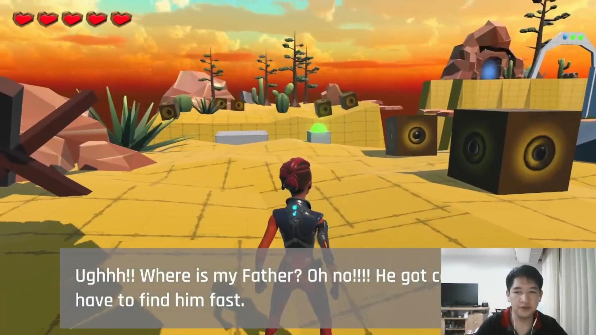 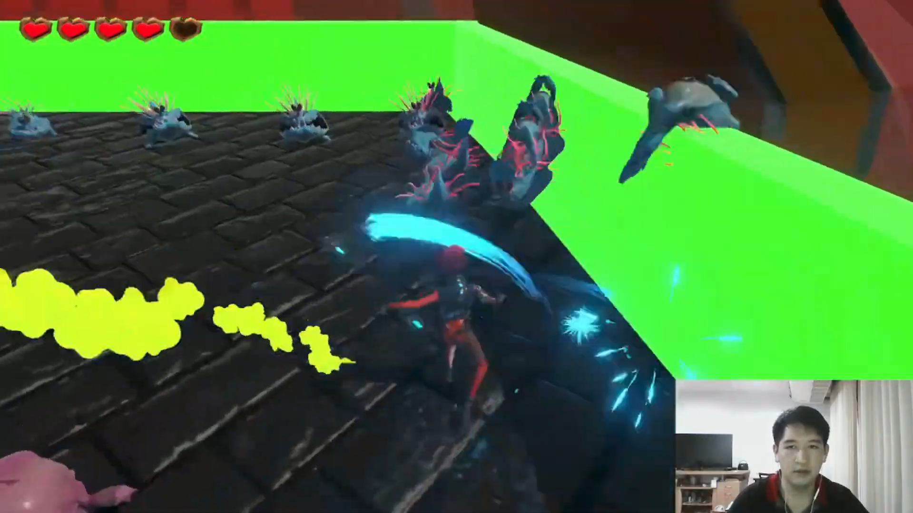 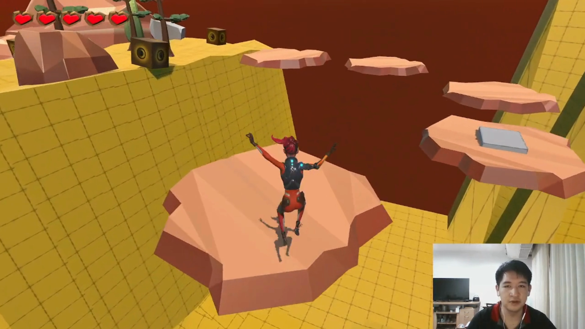 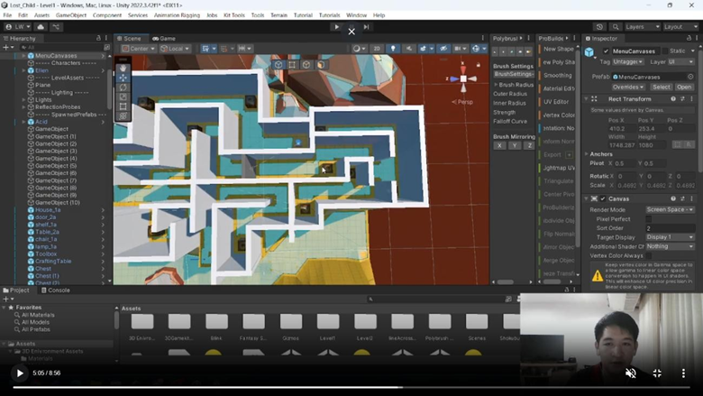 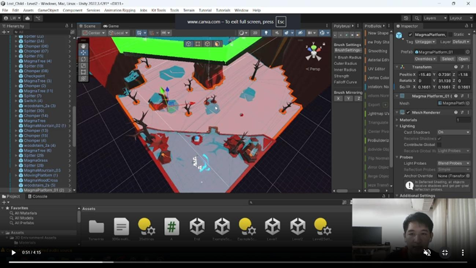 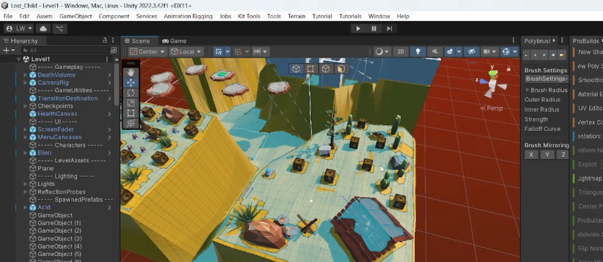 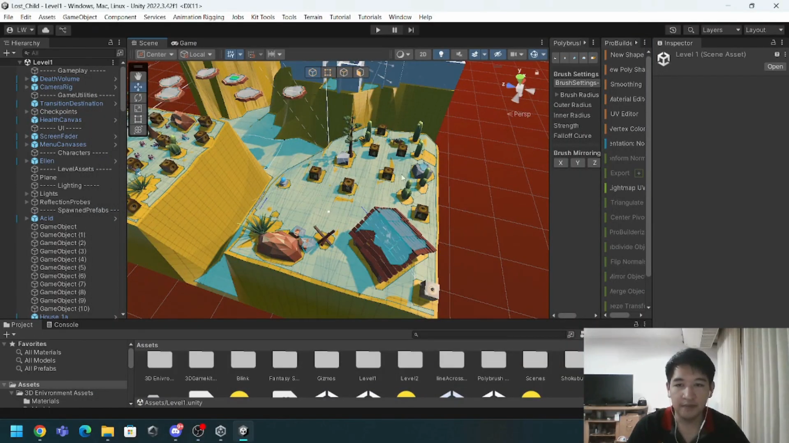
 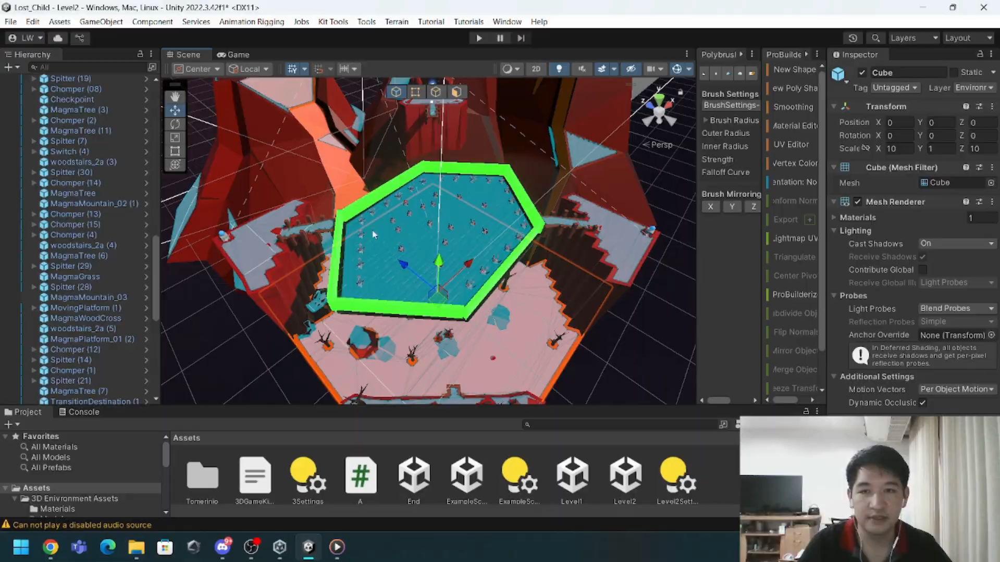
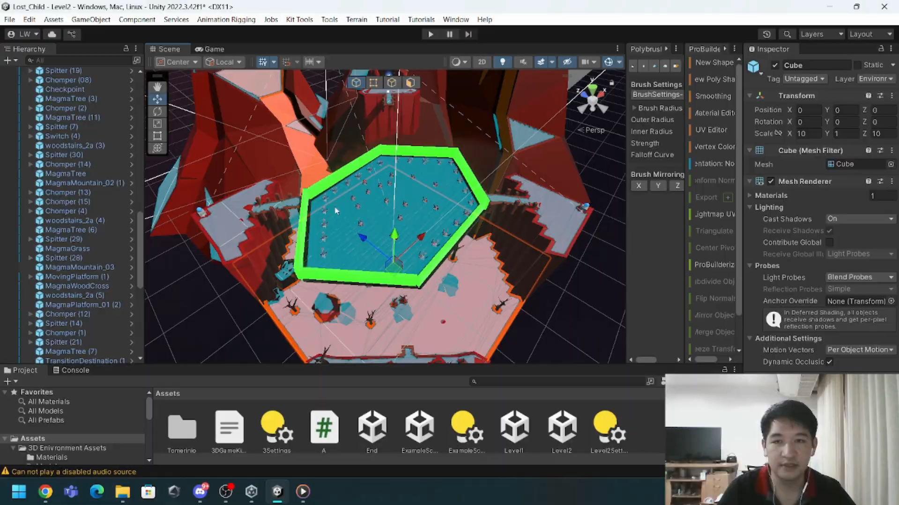
Lost Child
Developed using Unity and C#, this 3D adventure was a core university project. I led development from concept to completion, focusing on narrative and gameplay as the protagonist searches for their lost father. My contributions included engineering player mechanics, architecting levels, and implementing a progressive difficulty system. I ensured every challenge served the story while maintaining a polished player experience.
C# / Unity Engine -
Lantern of the Lost
Developed in Unity using C#, this 2D puzzle-platformer challenges players to find keys and reach the exit. As a key contributor to this university group project, I designed and implemented a full level, focusing on 2D mechanics and logic-based puzzles. I collaborated with my team to ensure my level design integrated seamlessly with the game's overall difficulty and atmospheric flow.
C# / Unity Engine -
Mental Health Detector
Developed as a group project, this application uses OpenCV for Unity to perform real-time facial emotion recognition. By capturing a user's face via camera, the system detects emotional states such as happiness, sadness, or anger. I contributed to the project background and core concept while assisting in the technical development using C#. This project demonstrates my ability to integrate computer vision libraries into the Unity environment to create interactive, AI-driven tools.
C# / Unity Engine / OpenCV for Unity -
AR Food Menu
This augmented reality application uses the Unity Engine to transform traditional dining experiences. By scanning a QR code with the device camera, users trigger an interactive digital menu. I assisted in the development and helped define the project's key highlights, focusing on the AR interaction where clicking menu buttons renders realistic 3D food models in the real-world environment. This project demonstrates my ability to implement camera-based tracking and interactive AR UI using C#.
C# / Unity Engine / OpenCV for Unity -
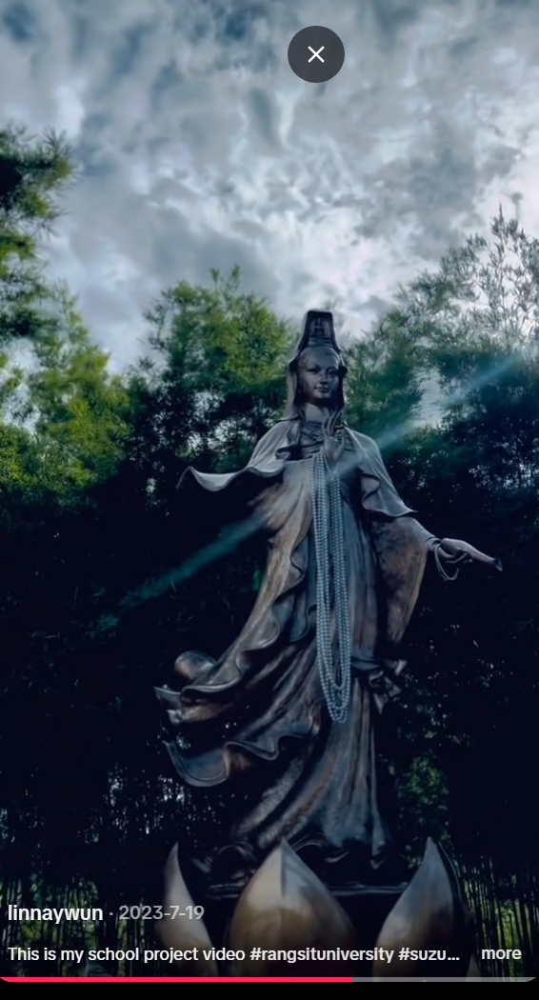 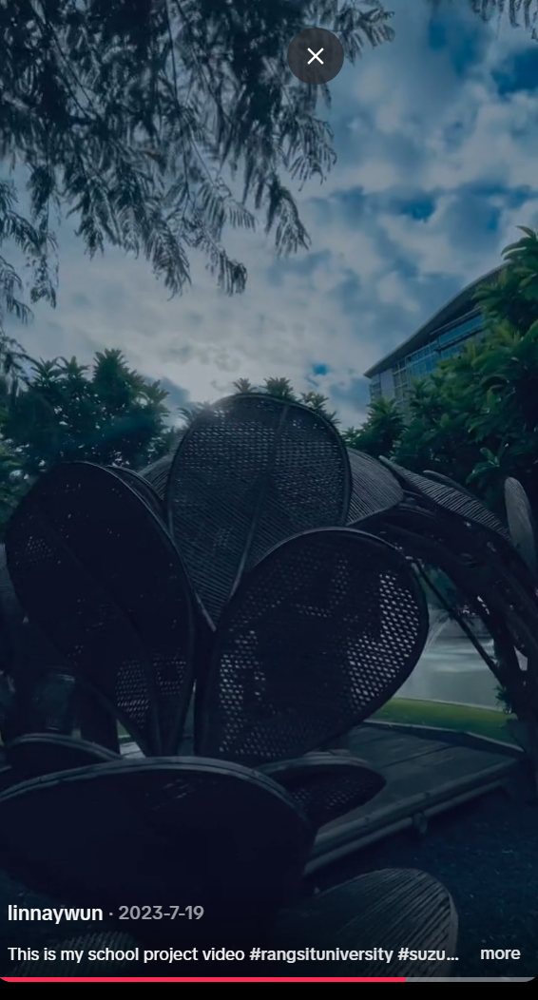
 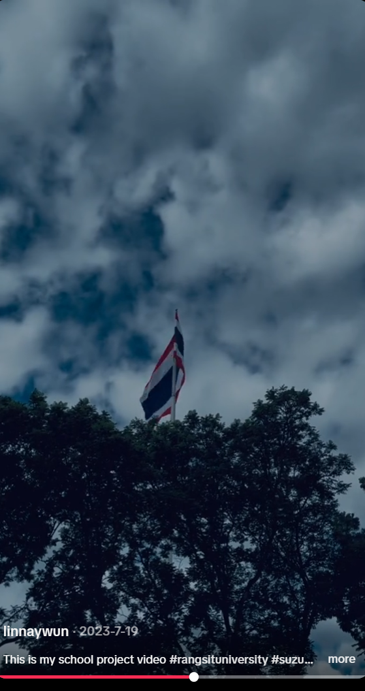
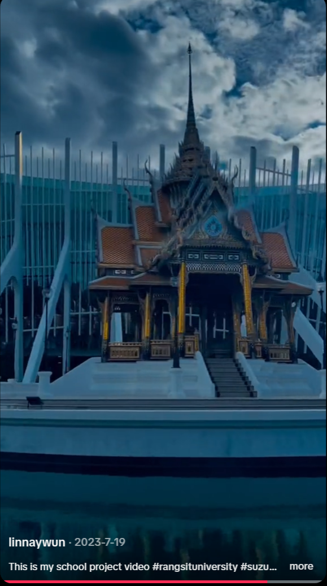
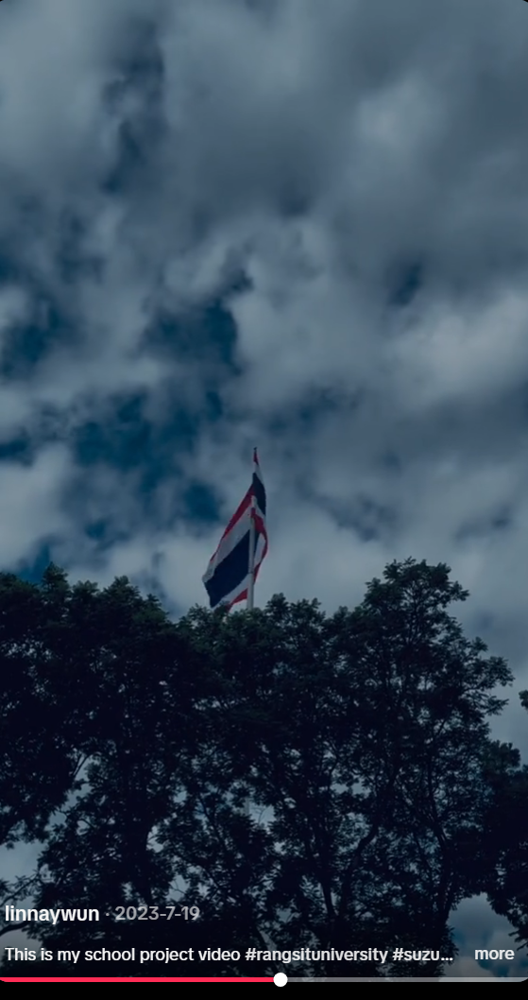
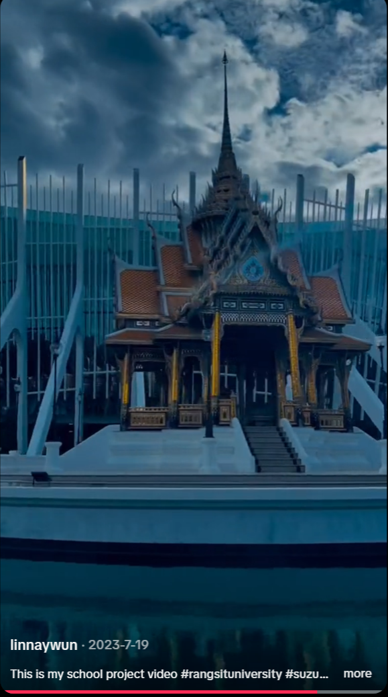
School Scenery
Produced for a Digital Media Literacy course, this project focuses on capturing and showcasing the unique atmosphere of my university campus. Working in a creative group, I served as the primary videographer and editor, utilizing iMovie to craft a professional and engaging video. I focused on visual storytelling through careful shot selection and rhythmic editing to highlight the school's scenery. This project allowed me to develop my skills in media production, timing, and creative communication.
IMovies / TikTok